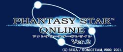

| 2001.10.29 |
【「ＰＳＯ」が計１５個目の賞を受賞しました!!】
「ファンタシースターオンライン」が、BAFTA（The
British Academy of Film & Television Arts）
の主催する本年度「BAFTA Interactive Entertainment
Awards」の、2001年10月25日ロンドンにて開催された授賞式にて、Games-Networked
Award部門を受賞しました！
BAFTAとは英国の映画、テレビ番組及びインタラクティブメディアにおける最も権威ある学会で、BAFTAが年に一度最も優れた映画、テレビ番組およびインタラクティブメディアに対して授与する賞は英国アカデミー賞とも呼ばれる非常に名誉あるものです。
この度の受賞を含めると、「ＰＳＯ」は内外で計１５もの受賞を果たすことができました。これらの受賞はひとえに、熱いご支持を頂きました多数のユーザーの皆さまのおかげです。本当にありがとうございました！
2001.10.29 ソニックチーム
|
| 2001.10.29 |
【「第２回
ＰＳＯファン感謝祭 ファミ通ＣＵＰ -Maximum Attack-」登録終了！】
１０月２８日２４：００をもちまして、「第２回
ＰＳＯファン感謝祭 ファミ通ＣＵＰ -Maximum Attack-」の登録を終了させていただきました。ハンターズの皆様、沢山の登録本当にありがとうございました!
（株）ソニックチーム代表取締役社長 中裕司と、（株）エンターブレイン代表取締役社長
浜村弘一様より、イベント終了のご挨拶を掲載させていただきます。
(株）ソニックチーム 代表取締役社長
中 裕司
|
みなさん
こんにちは。
ソニックチームの 中 裕司 です。
第２回ファミ通ＣＵＰ-Maximu Attack-の登録が先ほど終了しました。
当初は目標値を何ポイントにしようか迷っていたのですが、これほど登録いただけたことに開発者一同驚いております。
イベントは全体を通して大変な盛り上がりを見せることができ、これも皆様の御協力のおかげであり大変感謝しています。
みなさん、これからも「ファンタシースターオンライン」を応援してくださいね！ |
（株）エンターブレイン代表取締役社長
週刊ファミ通編集長
浜村 弘一
|
ファミ通の浜村です。
一億ポイント達成なんて、とっても達成不可能な数字かと、個人的には思っていたのですが……。
ＰＳＯファンの愛と努力に感動しました！ その熱意に深く敬意を表する意味でも、ぜひまた機会を作って、なにか企画を催したいですね。
これからもＰＳＯ同様、ファミ通もよろしくお願いします！ |
合わせて今回のイベントを担当しました、ＰＳＯチームクエスト班よりの皆様へのお礼の言葉も掲載させていただきます。
|
ＰＳＯチームクエスト班
|
| ハンターズの皆様。本当にお疲れ様でした。
そしてこれほどまでたくさんのご登録をいただき、本当に感謝しております。
今回のイベントはユーザーの皆様全員が協力することで、更なる思い出を作って頂こうということを目標に制作を行いました。
イベントを盛り上げるためにファミ通編集部の方々にご協力を頂き、イベントの告知やロビーイベントを開催して頂いたこともありました。
また、クエストをマイナーチェンジしたりさまざまなギミックを入れたりしたこともありました。
正直、登録数が少ないまま終わってしまうのでは？という不安が常に付きまといました。
しかし終わってみれば予想をはるかに越える登録数を記録することができ、オンラインゲームの新たな歴史が刻むことができたと考えています。
このイベントで学んだことを生かして今後のクエスト制作を行っていきたいと思います。
今回のイベントに協力してくださいましたユーザーの皆様、関係者の皆様、本当にありがとうございました。 |
■その他のお知らせ
景品の抽選に関しましては１０月２８日２４：００の段階で表示されていたもののみ対象とさせていただきます。
■思い出リンク
第２回 ＰＳＯファン感謝祭 ファミ通ＣＵＰ
-Maximum Attack-

公式ＨＰはこちら！（登録は終了しています。）
|
イベントに参加して下さったハンターズの皆様、本当にありがとうございました！
2001.10.29 ソニックチーム
|
| 2001.10.19 |
【『ＰＳＯ』オンラインアンケート終了!!
ご協力ありがとうございました！】
PSOオンラインアンケートは本日１８：００を持って終了させていただきました。
出題項目の多さにも関わらず、沢山の皆さんがアンケートに答えてくださり、
本当にありがとうございました。
このアンケートに寄せられた沢山のご意見を真摯に受け止め、
今後のＰＳＯの開発に役立てていきたいと思っております。
今度ともソニックチームとファンタシースターオンラインをよろしくお願い致しま
す。
アンケートの結果の一部はソフトバンクパブリッシング株式会社より
１２月発売予定の「ファンタシースターオンライン・ファンブック」に掲載
される予定です。どのような結果になっているかお楽しみに!!
プレゼントは厳正な抽選の上、当選者の方にお送り致します。
（プレゼントの一つ、ＰＳＯオリジナルＴシャツ（非売品）の画像はこちら！）
発表は発送をもって代えさせていただきますので、ご了承下さい。
2001.10.19 ソニックチーム |
| 2001.9.28 |
【「第２回
ＰＳＯファン感謝祭 ファミ通ＣＵＰ-Maximum Attack-」】
第２回 ＰＳＯファン感謝祭 ファミ通ＣＵＰ -Maximum Attack-
公式ＨＰはこちら！
※登録は終了しています。
|
【おしらせ】
|
１０月３０日のダウンロードサーバーのメンテナンスは終了致しました。
ご協力ありがとうございました。
このメンテナンスにより、ダウンロードクエスト『夕焼けの秘密基地』
がマイナーチェンジされました。皆さん、是非お楽しみください！
| 配信クエストタイトル内容 |
夕焼けの秘密基地：ダウンロードクエスト
（必要容量/ ２４+３０+１４＝６８ブロック）
|
ハンターズギルドに謎の手紙が一通とどいた。
親分がつかまってしまったので助けて欲しいとのこと？
ＰＳＯのマスコット（？）、ラッピーが多数登場のほのぼのクエスト。
また、ファミ通編集者さん達も多数出演するぞ！
|
お知らせ
|
| ＰＳＯのキャラクターをPSOver2にコンバートする際に総督の前からゲームが開始されてしまう現象が報告されています。
この現象が見られる場合は、今回配信されるダウンロードクエスト『夕焼けの秘密基地』をダウンロードし、プレイすると正常なデータに戻ります。 |
マイナーチェンジバージョンのクエストをプレイされる場合には９月２８日、１０月１９日に配信された『夕焼けの秘密基地』のファイルを削除してからプレイされるようお願いします。
ダウンロードしてしまった場合はクエストをプレイする前に古いバージョンのクエストを削除してください。 |
|
2001.10.30 ソニックチーム
|
|
チョイスサーチ追加のお知らせ
|
| チョイスサーチの検索項目に『ファミ通メンバー募集中』が追加されます。ファミ通クエストを一緒にプレイする仲間を探して１億ポイントめざしましょう！！
１０月２４日の午後から使用可能となりますので、どうぞご利用ください。
※チョイスサーチの項目設定で 『ファミ通メンバー募集中』をＯＮにしておくと他のプレイヤーから検索可能となります。 |
2001.10.23 ソニックチーム
|
| チョイスサーチでファミ通編集部の方が使用するキャラクターを検索できるようになりました。イベント期間中限定ですので是非ご利用ください。
選択できる項目は下記の通りです。
『俺より強いヤツに会いにいく！』
『毒舌の小部屋』
『社長室から』
これでファミ通キャラに会えるかも！？みなさんぜひお試しください!
2001.10.10 ソニックチーム
|
| 「第２回 ＰＳＯファン感謝祭
ファミ通ＣＵＰ -Maximum Attack-」登録サイトのメンテナンスは終了しました。
このメンテナンスにより、キャラクター名称にスペースが含まれていた場合、
2回目以降の登録が反映されないという問題に対応致しました。
これまで不具合のため、参加していただけなかった皆さんには大変ご迷惑をお掛け致しました。
「第２回 ＰＳＯファン感謝祭 ファミ通ＣＵＰ -Maximum
Attack-」に皆様ぜひご参加ください!
2001.10.2 ソニックチーム
|
|
| 大会概要 |
| 今回は、 ファミ通ＣＵＰクエスト、オンラインクエスト、
ダウンロードクエストの豪華３本立てとなります。
ファミ通ＣＵＰクエストは４人用。
クエスト内で倒したモンスターの数を ポイントとしてビジュアルメモリーに保存し、
「第２回『ファミ通ＣＵＰ』公式サイト」にてアップロード。
そして『PSO』ユーザーみんなで協力して、 １億ポイントを達成しようという内容です。
また、規定ポイントを達成するごとに 豪華賞品が抽選で当たることも！！
ダウンロードクエストでは、 前回同様さまざまな仕掛けが施してあり、 いままでに見たことのない
アイテムが手に入ることもあるかも !? |
| 配信クエストタイトル内容 |
ファミ通-MAXＩMUM ATTACK-：オンラインクエスト
（１〜４人用）
|
前回のファミ通ＣＵＰ同様、総督がハンターズ
の能力を測るために開催されたクエスト。
シミュレータの中でエネミーを倒しポイントを稼ぐことが目的だ。
稼いだポイントを「第２回『ファミ通ＣＵＰ』公式サイト」に
アップロードし、ユーザー全員で１億ポイントをめざせ！
|
ご注意！
|
| 『ファミ通-MAXIMUM ATTACK-』はノーマル・ハード・ベリーハードモードでのみプレイが可能であり、アルティメットモードでのプレイはできません。ご了承ください。 |
|
明日の代価：オンラインクエスト
（１〜４人用）
|
ある研究員からの依頼。
坑道にあるコンピュータを破壊して欲しいとのこと。その途中謎の機械にふれ、体が小さくなってしまったプレイヤー達。
違った視点から見るラグオルは新鮮だぞ！！ |
夕焼けの秘密基地：ダウンロードクエスト
（必要容量/ ２２+３０+１４＝６６ブロック）
|
ハンターズギルドに謎の手紙が一通とどいた。
親分がつかまってしまったので助けて欲しいとのこと？
ＰＳＯのマスコット（？）、ラッピーが多数登場のほのぼのクエスト。
また、ファミ通編集者さん達も多数出演するぞ！
|
お知らせ
|
| ＰＳＯのキャラクターをPSOver2にコンバートする際に総督の前からゲームが開始されてしまう現象が報告されています。
この現象が見られる場合は、今回配信されるダウンロードクエスト『夕焼けの秘密基地』をダウンロードし、プレイすると正常なデータに戻ります。 |
|
みなさん、是非お楽しみ下さい！！
【ＰＳＯ関連書籍情報を更新しました！】
宙出版様
「４コママンガ笑スタジアム ファンタシースターオンラインVer.２
ＩＩ」（発売中）
の情報を掲載しました。
2001.9.28 ソニックチーム
|
| 2001.9.12 |
【PC版「ファンタシースターオンライン」発表!!】
今冬、ついに「PSO」がＰＣの世界にも登場することとなりました。
今回は、2001年6月に発売されたバージョンアップ版「PHANTASY
STAR ONLINE Ver.2」の内容を完全再現。
さらにPC版では「ワードセレクトシステム」の機能向上を図り、中国語（簡体字、繁体字）、韓国語を追加した合計7ヶ国語に対応させる計画です。同機能により、言語の壁を超えたスムーズなコミュニケーションを促進する環境を提供し、PCというプラットフォームの属性を活かした世界規模でのネットワークプレイを実現します！
詳細はリンク先にて！！
【ＰＳＯ関連書籍情報を更新しました！】
宙出版様
「ゲームアンソロジー Welcome to ファンタシースターオンラインVer.２」（発売中）
「４コママンガ笑スタジアム ファンタシースターオンラインVer.２」（発売中）
の２冊の情報を掲載しました。
【「第３弾
面白エピソード大募集」結果発表
＆「マッキンリーへの道」】
またまたお待たせいたしました！
「第３弾 面白エピソード大募集」の結果発表です！
また今回更に、週刊ファミ通誌上でも紹介されました、北米最高峰マッキンリーに挑戦したＰＳＯユーザー、田中さんと佐藤さんの登頂までの足跡をたどった
レポートをお二人のご厚意により、作成しました。
面白エピソード特別編として、こちらも是非ご覧ください！2001.9.12
ソニックチーム |
| 2001.8.14 |
【ゲームキューブ版
「ファンタシースターオンライン」（仮）
についての重大発表!!】
先日のＥ３で発表となりました、ゲームキューブ版「ファンタシースターオンライン」（仮）が、「任天堂スペースワールド2001」にて、いよいよ日本のファンの皆さんの前に姿をあらわします。
今回は今まで未定となっていたオンライン対応の行方を発表！
ソニックチームが出展する他のタイトルも気になります。
各ソフトの出来栄えや気になる追加要素は、是非皆さんが会場に足を運んで、自分の目で確かめてください!！
「任天堂スペースワールド2001」は
８月２４日（金）〜２６日（土）（一般公開日は２５，２６日）
幕張メッセにて開催されます。
詳細はリンク先にて!!2001.8.14
ソニックチーム |
| 2001.6.29 |
【ＰＳＯ関連書籍情報を更新しました！】
ソフトバンク様
「ファンタシースターオンラインVer.２ パーフェクトガイド」（発売中）
角川書店様
「スニーカー文庫 ファンタシースターオンライン
(２)闇の因子」
（７月１日発売予定）
の２冊の情報を掲載しました。
【ビジュアルＢＢＳの不具合について】
6月22日〜6月26日まで、システムが一部不安定になっていたため、画像アップロードがしにくい場合がございました。現在は復旧しております。
皆様にはご迷惑をお掛けしましたこと、お詫び申し上げます。2001.6.29
ソニックチーム |
| 2001.6.18 |
【PSO・オフィシャルサポーターズリンク更新のお知らせ】
大変お待たせしました! 第２回・オフィシャルサポーターズリンクの更新をいたします。
今回はなんと一気に１７７サイトとのリンクを追加いたしました！
ファンの皆様の熱い思いのこもった『PSO』ファンページの数々を是非ごらんください！2001.6.18
ソニックチーム |
| 2001.6.13 |
【ミーティングBBSの閉鎖および利用規約変更について】
PSO・ミーティングBBSにおきまして、不正プレイヤーがアイテムの配布行為を行っている事実が確認されました。
このままでは通常プレイを行っていただいております、ユーザーの皆様への影響が大きいと判断し、
６月１５日午前１０時３０分を持ちましてミーティングBBSを閉鎖させていただきました。
不特定多数のユーザーの皆様の交流の場として、大変にぎわっておりましたミーティングBBSをこのような理由で閉鎖しなければならないことは本当に残念です。
プレイヤーの皆様には重ねて、正規の方法でのプレイをお願いするとともに、不正ユーザーの排除にご協力をお願い申し上げます。
また近日、フリー、シークレット両BBSでの不正行為に関する論争等の発言が目立っておりますが、BBSはユーザーの皆様の交流の場として用意させていただいております。
これらの発言は、BBS本来の趣旨とはまったくかけ離れたものでありますので、誠に勝手ながら、
本日６／１３より、BBSにおける不正行為に関する発言を一切禁止させていただきます。
この規約に違反した方は、申し訳ありませんが、BBSのご利用を即時停止いたします。
今後、不正行為に関するご意見、情報等はソニックチーム宛に直接メールしていただく様、お願い申し上げます。
ユーザーのみなさまのご理解をお願いいたします。
2001.6.13 ソニックチーム
|
| 2001.5.24 |
【株式会社ＩＳＡＯからのお知らせ・ＰＳＯコース】
ＰＳＯをいつまでも楽しみたい！そんなあなたにはこれをオススメします!！
接続料とハンターズライセンスがセットになった新コースのご案内です。
■ＰＳＯコース（定額ゲームコース）■
<詳しくはこちらをごらんください！
『定額ゲームコース』とはイサオへの接続料金とゲームの利用権がセットになった料金コースの総称です。１度コースに申し込みされますと、それ以降は毎月自動で利用権の購入が行われます。
そのため、ご利用のたびに利用権の購入を行う必要がございません。
『 PSOコース』とは定額ゲームコースの中の1つで、『ファンタシースターオンライン』の
『ハンターズライセンス』（ＰＳＯ利用権）がセット対象となります。
そのためインターネットはもちろん、ファンタシースターのオンラインプレイを思いっきり
楽しみたい方に大変お奨めのコースです。 |
| 2001.5.2 |
【「ファンタシースターオンライン
Ｖｅｒ．２」最新情報!!】

今回はチャレンジモードの紹介や製品についての皆さんの疑問にお答えするコーナーに加え、来場できなかった皆様のために、「GameJam
in ZeppTokyo」で公開した 「PSO Ver.2」のムービーを掲載しました！（DCでもムービーをご覧になれますよ!!）
【期間限定！「PSO」サポーターズクラブ開設!!】
（株）ISAO様が運営するDreamHomeにおきまして、
ファンタシースターオンライン（PSO）サポーターズクラブが発足致しました。
ユーザーの皆さんの質問にソニックチームが回答するQ&Aコーナーやキャラクター人気投票、ユーザーの皆さんのイラストコンテスト、秋祭りで好評だったデジタルトレーディングカードの復刻と、盛りだくさんの内容です。
皆さん是非一度ご覧ください!
【第１次、第２次「面白エピソード募集」結果発表！
】
ずいぶん長い間お待たせすることになってしまい、本当にゴメンナサイ！
トライアル期間〜製品版の発売後一週間に募集しました、「面白エピソード大募集」の結果発表です！ |
| 2001.4.25 |
【『ＰＳＯ』コミック本発売のお知らせ】
宙出版様から４コママンガ集が発売されました！
PSOプレイヤーなら思わず笑ってしまうような小ネタが満載された一冊です。
お近くの書店で是非お買い求め下さい！ |
| 2001.4.20 |
【PSOファン感謝祭ファミ通ＣＵＰ結果発表のお知らせ】
この度は、PSOファン感謝祭ファミ通ＣＵＰにご参加いただき誠にありがとうございました。本当に多くの方のご参加とご協力をいただき、大会を終了することとなりました。
大会公式サイトにて最終ランキングを発表致しております。是非、最終ランキングをご確認ください。
公式ページはこちら！
また、入賞者の皆様には別途メールにて連絡させていただきました。
※賞品の発送は『ファンタシースターオンライン Ver.2』の発売日が5/31となりますので、6月第一週となります。 PSOファン感謝祭・ファミ通ＣＵＰ大会運営委員会 |
| 2001.3.30 |
『ファンタシースターオンライン』が
第5回 日本ゲーム大賞を受賞しました！ |
| 2001.3.2 |
海外サイト翻訳サービスはじめました！
エキサイト(株）様のご協力により、海外の公式サイトや情報サイト、今後増えてくるであろう海外ユーザーサイトの翻訳サービスを開始致します。ＰＳＯの知り合った海外のプレイヤーとの交流の一助となれば幸いです。
今回はまず米欧公式サイトへのリンクのみですが、今後海外ユーザーからもオフィシャルサポーターズを募集し、海外と日本のユーザーが相互に翻訳サイトを利用することで、ＨＰにおいても、国境を越えたコミュニケーションを実現していく予定ですので、ご期待ください！
『ＰＳＯ』関連商品のコーナーはじめました。
攻略本やサントラなど関連商品をまとめてご紹介するコーナーを作りました。なかなか見つからないという方は是非注文の参考にしてくださいね!
いよいよ発売される設定資料集や小説版の情報も載せています! |
| 2001.2.6 |
【PSO・オフィシャルサポーターズリンク】を公開！！
お待たせしました! いよいよ、ファンの皆様の熱い思いのこもった『PSO』ファンページとのリンクを公開いたします!今後もリンクは続々ふえる予定です！
我こそは、と思うPSOサポーターズの方は是非ソニックチームまでメールを！ |
| 2001.1.20 |
｢PSO・サウンドトラック発売のお知らせ｣を掲載しました！ |
| 2000.12.29 |
【PSO・ビジュアルBBS正式運用開始しました！】

上のバナーをクリックして下さい。
Produced by ISAO Corp
|
| 2000.12.21 |
「PSO・オンラインサポートＨＰ」がオープンしました!
ダウンロードやイベントなど製品をお持ちの方への情報はこちらに掲載されます。
「PSOサウンドチームＨＰ」がオープンしました!
サントラの情報やPSOの音楽の制作秘話はこちらで！
製品版発売に伴い、BBSを３つに増設しました！
書き込みの内容にあわせて使い分けて下さるようにお願いします。
「ブロードバンドアダプタへの正式対応について」を掲載しました！
「各地のPSO看板」大阪の画像を追加掲載しました。
PSOの世界「マグとフォトンミラージュについて」を掲載しました!
|
| 2000.12.13 |
「TVCM第一弾のムービー」と
「各地のPSO看板」の画像を掲載しました。 |
| 2000.12.07 |
「ファンタシースターオンライン」発売記念イベント
「ソニックチームファン感謝祭」＆
「サンバ DE アミーゴ ver.2000」
ラジオ番組公開録音イベントの開催のご案内を掲載しました。 |
| 2000.12.01 |
「ドッグタグのサンプル画像」と
「製品版のジャケット」を掲載しました。 |
| 2000.11.15 |
「限定10万人予約キャンペーンのお知らせ」
を掲載しました！ |
| 2000.11.13 |
「ネットワークプレイ利用料金についてのお知らせ」
を掲載しました！ |
| 2000.11.10 |
「ファンタシースターオンライン」著作物利用規約を掲載しました！
「トライアル版の参加者の皆様へのお願い」を掲載しました！
「モンスター紹介」坑道で出会うモンスターを紹介!
「ステージ紹介」坑道面を公開！
「シティについて」シティの詳細を公開！
「PSOフォントダウンロードサービス」を開始しました！ |
| 2000.10.27 |
「限定版についてのお知らせ」を掲載しました。 |
| 2000.10.20 |
「キャラクター紹介」全９キャラクターを公開！
「ゲーム序盤のモンスター」森、洞窟で出会うモンスターを紹介!
「ステージ紹介」森林面、洞窟面を公開！
「特報」に初回特典の「SONIC
ADVENTURE２」体験版についての情報、
ネットワークトライアル版の発送時期などを追加掲載しました。 |
| 2000.9.30 |
「ファンタシースターオンラインBBS」が開設されました。 |
| 2000.9.22 |
「発売日、価格、ネットワーク接続方法について」
「ゲーム序盤の流れ」
「キャラクタークリエイトシステム」
「ゲーム序盤の武器」についてのコンテンツを追加しました! |
| 2000.8.11 |
「Phantasy Star Online」オフィシャルページリニューアル！
今後もコンテンツは拡張していきます。お楽しみに!! |